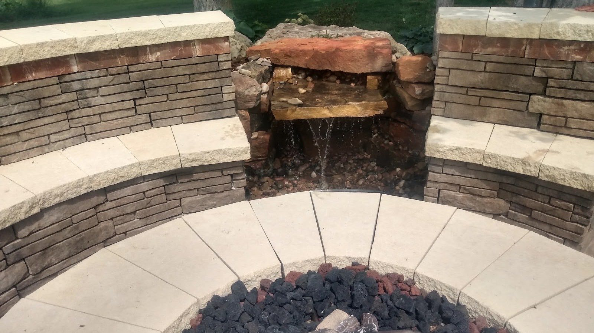
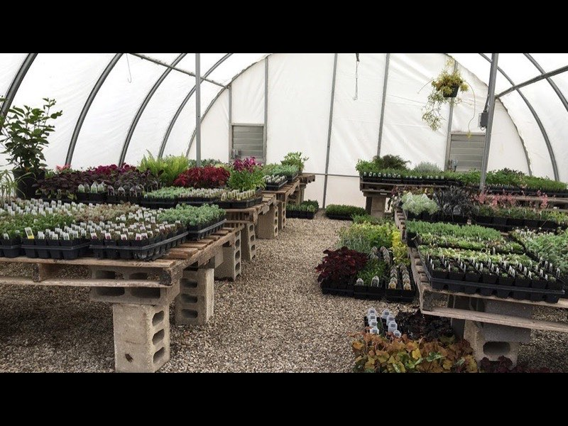
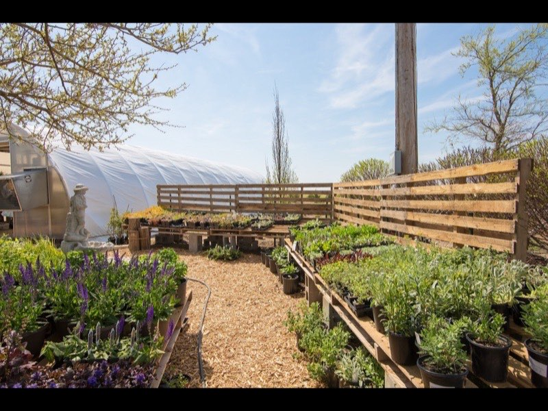
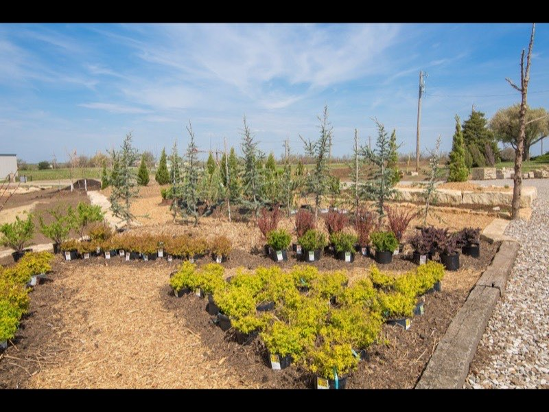
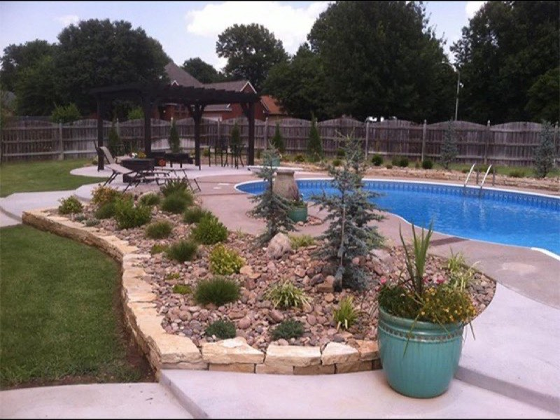
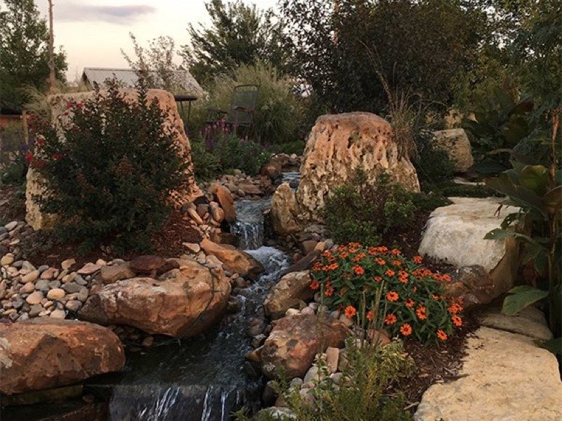
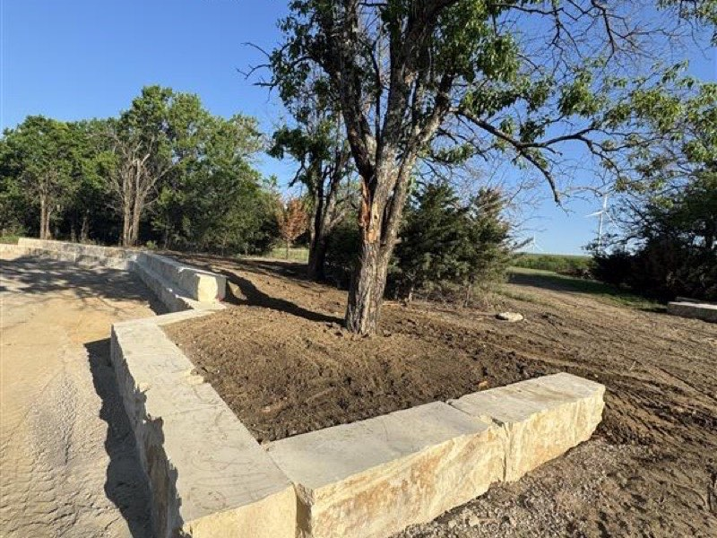
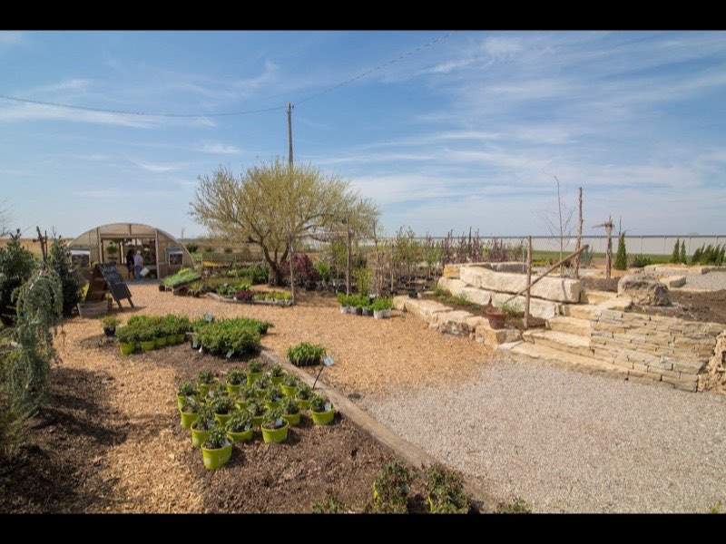
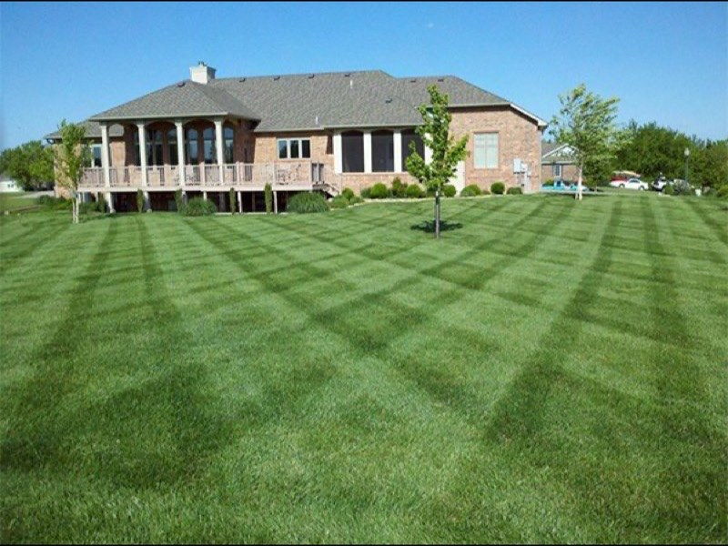

Landscape Design & Install
Planning beds, trees and full backyard layouts that fit how you actually use the space — then planting it with stock from our own nursery.

Winfield & Cowley County, Kansas
From drainage fixes and stone patios to full backyard transformations — and backed by our own nursery and garden center, so the plants that go in your yard were grown for this Kansas soil.
What we do
Design, hardscape, drainage and lawn care — handled by people who also grow the plants. Here's where most Winfield projects start.
Planning beds, trees and full backyard layouts that fit how you actually use the space — then planting it with stock from our own nursery.
Paver and natural-stone patios, seat walls, retaining walls and walkways — built on a proper base so they stay level for the long haul.
Pondless waterfalls, garden ponds and stone fire-pit areas that turn an ordinary yard into the place everyone wants to gather.
Standing water or a soggy low spot behind the house? We find the source and re-grade or pipe it so the water goes where it should.
Mowing, edging and seasonal cleanups that keep a property looking sharp — the striped, well-kept look that says someone cares for it.
Shade and ornamental trees, fruit trees, perennials and shrubs — grown on-site and chosen to thrive in south-central Kansas.



More than a contractor
Most landscapers buy whatever the supplier has in stock. We grow ours. Our Winfield nursery and garden center means the trees, shrubs and perennials going into your yard were raised right here for this climate — and you can come walk the rows yourself.
How it works
No mystery, no pressure. Here's how a typical Gottlob project comes together.
Tell us what's bugging you about the space — drainage, looks, a patio idea. We listen first.
We come look at the site, talk options that fit your budget, and give you a clear, free estimate.
We lay out the plan and the plants, then book a start date that works around your calendar.
Our crew does the work and leaves it clean — and we're here if anything needs a look after.
Our work
A few recent jobs — patios, water features, plantings and drainage work, all done by our own crew.





From our Google reviews
What neighbors around Winfield say after the crew packs up.
"Gottlob's absolutely knocked our project out of the park. What started as a need to fix water drainage behind our house turned into so much more… they transformed the space into somewhere we can actually enjoy — areas to gather, plant flowers, and relax."
"I had an unexplained water issue on my property, and Alex went above and beyond to solve the problem quickly, thoroughly, and affordably. He was incredibly responsive and kept me updated with clear explanations the entire time."
"A tremendous partner in our community. They helped Dexter High School students select new fruit trees for their orchard… patient, knowledgeable, and genuinely invested in helping the students succeed. Highly recommend them."
Where we work
Based on East 9th Avenue in Winfield, we take care of yards and projects across Cowley County and the surrounding south-central Kansas towns. Not sure if you're in range? Give us a call — chances are we can help.
Good to know
Yes. We'll come out, look at the project, and give you a clear estimate at no cost and no obligation. Call (620) 222-8870 or send the form to get on the schedule.
We do. The same Gottlob crew that plans your beds, patio or drainage also builds it — and we plant it with stock from our own nursery, so nothing gets lost in a handoff.
Absolutely. The garden center is open to the public — come walk the rows, pick out trees, shrubs and perennials, and get honest advice on what will actually thrive in your yard.
Winfield, Arkansas City, Wellington and the surrounding Cowley County communities in south-central Kansas. If you're nearby and not sure, just ask.
Yes — it's some of our most-requested work. We track down where the water's coming from and re-grade, pipe or drain it so your yard stays usable instead of soggy.
Tuesday through Friday, 10:00 AM – 5:30 PM, and Saturday 8:00 AM – 4:00 PM. Closed Sunday and Monday. Phone messages are checked, so leave one and we'll get back to you.
Let's talk
Tell us what you have in mind — a patio, a drainage headache, a full redo, or a cart full of plants. We'll give you a free, honest estimate and a real plan.